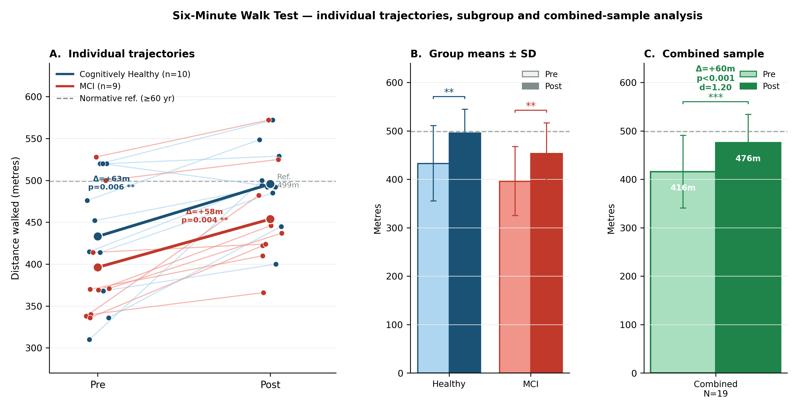

Archives of Gerontology and Geriatrics · 2026
Kinestesia: A neuroplasticity-based cognitive–motor intervention for brain health in aging — proof-of-concept pilot evidence
Estudio piloto de prueba de concepto (N = 22; 11 sanos, 11 con DCL) que evalúa la plataforma Kinestesia: 30 sesiones de entrenamiento cognitivo-motor simultáneo con dificultad adaptativa en tiempo real. Establece las bases para un ensayo controlado aleatorizado.
Resultados principales
- Mejora de +60 metros en el test de marcha de 6 minutos (6MWT), con tamaño del efecto grande (d = 1,20; p < 0,001).
- 100% de adherencia al protocolo: los 22 participantes completaron las 30 sesiones.
- Mejoras significativas en memoria diferida y funciones ejecutivas tras la intervención.
- Diferencias espectrales de EEG entre grupos (sanos vs. DCL) presentes al inicio desaparecieron tras la intervención en 21 de 23 índices evaluados.

Mejora en 6MWT y cognición